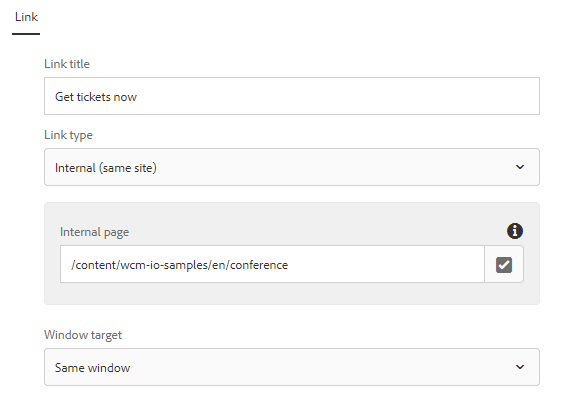

wcm.io
wcm.ioLink Handler Granite UI components
Link Reference Container

A component that defines the full set of fields for defining a link with it’s properties to be included in a dialog tab. The link types are displayed dynamically as configured in the link handler configuration. It is possible to add your own fields.
{
"jcr:primaryType": "nt:unstructured",
"sling:resourceType": "granite/ui/components/coral/foundation/fixedcolumns",
"jcr:title": "Link",
"margin": true,
"cq:showOnCreate": false,
"items": {
"column": {
"sling:resourceType": "granite/ui/components/coral/foundation/container",
"items": {
"linkRef": {
"sling:resourceType": "wcm-io/handler/link/components/granite/form/linkRefContainer",
"showLinkTitle": true
}
}
}
}
}
Internal Link Type Path Field
This is a customized Path Field that always sets the root path to the link root path as defined by the Link Handler configuration for internal links. By default, this is the site root path as defined by the URL Handler configuration.
"field": {
"sling:resourceType": "wcm-io/handler/link/components/granite/form/internalLinkPathField",
"fieldLabel": "Internal page (same site)"
}
This component extends the wcm.io Granite UI components Path Field. Enhancements over this version:
- Dynamically sets
rootPathto the link root path as returned by the Link Handler configuration - Dynamically sets
nameto the default property name for internal links
Internal Link Cross Context Type Path Field
This is a customized Path Field that always sets the root path to the link root path as defined by the Link Handler configuration for internal cross-context links. By default, this is /content.
"field": {
"sling:resourceType": "wcm-io/handler/link/components/granite/form/internalCrossContextLinkPathField",
"fieldLabel": "Internal Page (other site)"
}
This component extends the wcm.io Granite UI components Path Field. Enhancements over this version:
- Dynamically sets
rootPathto the link root path as returned by the Link Handler configuration - Dynamically sets
nameto the default property name for internal cross-context links
Media Link Type Path Field
This is a customized Path Field that always sets the root path to the link root path as defined by the Link Handler configuration for media links. By default, this is /content/dam.
"field": {
"sling:resourceType": "wcm-io/handler/link/components/granite/form/mediaLinkPathField",
"fieldLabel": "Asset reference"
}
This component extends the Media Handler-aware Path Field. Enhancements over this version:
- Dynamically sets
rootPathto the link root path as returned by the Link Handler configuration - Dynamically sets
nameto the default property name for media links - Dynamically sets
mediaFormatsto a list of all media formats with “download” flag